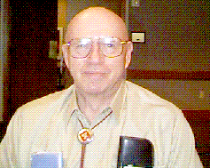

Guy F. Rowe was drafted and sworn into the Marine Corps Reserve on 9 June 1944. He completed boot camp and ITR at San Diego and Camp Pendleton before being assigned to the 24th Replacement Draft. The 24th sailed from San Diego to San Francisco, joined a convoy, and continued sailing to Maui, T.H. arriving on Thanksgiving Day 1944. The noon meal was delayed at the 23rd Marines mess hall until the replacement draft arrived, roughly 1330. Had a lot of P.0.'d Marines who had to wait.
The 24th Replacement Draft sailed with the rest of the 4th MARDIV to Iwo Jima. The ship, which I was on, was the Flag Ship of a 12 ship flotilla. The flotilla left the close proximity of Iwo for the night to avoid being sitting ducks for enemy submarines. About 0215, I had just returned to my bunk when the ship began to shake harder and harder. The screw was thrown into FULL REVERSE. After about a minute there was a loud crunch and the ship came to a sudden stop, before slowly backing away.
A young sailor had fallen asleep below deck with his foot resting upon a lever. This lever drained the hydraulic fluid from the steering mechanism. The weight of his leg and foot had opened the valve spilling the fluid onto the deck. This loss of steering caused the ship to veer to the right. It collided just aft of the bridge into the fourth ship in the third column putting a hole in the side large enough to drive a 6 x 6 through.
The two ships were left behind and arrived off Iwo after daylight and immediate unloading began. An air raid alarm sounded and volunteers were needed to man the guns. The sailors normally assigned were busy taking wounded aboard and off loading supplies. I went from the number 3 ammo loader to the number 1 gunner position on a twin forty mm in less than a half hour. Never did see any aircraft, though we could hear them; thus we never fired a shot.
About 1800 we off loaded into an LCI and headed for the beach only to have another air raid alarm sounded. The LCI sailed back and forth about 1000 yards offshore making smoke. The ALL CLEAR finally sounded and the LCI headed toward the beach. We debarked around 0100 on D+2. We walked inland from the beach through a great many wrecked vehicles under star shells and sporadic small arms fire. While walking we saw stacks of what looked like cord wood. As we got closer, we could see that these were stacks of bodies.
I remarked, " Boy! We sure killed a lot of Japanese."
When we got closer and passed between two of these stacks, we saw that the uniforms were not Japanese but rather Marine utilities.
My next remark was, " These are not Japanese, they're Marines. This is HELL!"
Shortly after passing the stacks of bodies we dug in for the rest of the night. Two men to a foxhole, one awake at all times. I had no trouble sleeping when it was my turn.
As it became light we moved forward across the end of airfield No.1, and were split into groups. The group I was in was assigned to the 1st Battalion 23rd Marines. The sergeant major assigned us to various companies. Before noon all were gone from the Battalion Headquarters area except those assigned to "Charlie" company, which was in reserve. Word was that "Charlie" company did not want replacements until morning.
Sometime after 1500 the sergeant major came over to our group and asked if anyone had ever been in the Boy Scouts. I replied that I had been, where upon the sergeant major pointed to an individual Marine. This individual Marine was the "C" Company runner. The sergeant major told me not to let the runner know that he was being followed, and to report back to the Battalion Headquarters when I had located "C" Company.
I replied, " Aye, Aye sergeant major".
I stayed 40-50 yards behind the "C" Company runner, who stopped to visit on the way back to "C" Company. I wandered around asking if anyone knew where " Charlie " Company was located.
The runner took more than a half hour getting back to the Company headquarters. When he did get back I heard someone ask him if the replacements were with him.
His reply, " No sir"
I took about ten minutes to get back to Battalion Headquarters. I told the sergeant major that I had located "Charlie" Company.
The sergeant major said, " Good! Take the rest of these replacements and get them up there ASAP!"
When I reported to "C" Company headquarters I was asked, "How'd you find us?"
My reply was, " I was told to head in this direction and ask until I found you; which is what I did."
I didn't tell them that I had followed the runner earlier. I was assigned to be the assistant BAR man for " Jack " Mattson.
The next morning "C" Company passed through the forward lines crossing airfield No. 2. Jack and I were told to get inside the blockhouse and to provide covering fire. Whenever Jack opened fire, the Japanese returned fire with rockets, tanks, machineguns, and small arms. I'm glad those walls were thick. The only things that hit us were cement chips. We decided to fire only when we saw movement. Every time Jack fired, we drew a tremendous amount of return fire.
Jack and I stayed there most of the day until someone wriggled up to us and told us to pull back. We withdrew to the edge of airfield No. 2 where we spent the night.
We took up positions in foxholes, which had been dug previously. I was in a hole by myself with empty holes on both sides of me. Machinegun and small arms fire was sporadic until suddenly a steady stream of machinegun fire concentrated in my direction, kicking up dirt from the parapet in front of me. I decided to look around the right edge to see how close the enemy was. I heard someone running and turned to my left just in time to see a Marine jump into the hole beside me. As I prepared once again to look around the parapet to the right I saw the Marine stand up to look over the parapet.
I said, " Don't do that ", but it was too late. As I started the word THAT, he grunted once and slowly slid to a sitting position at the bottom of the foxhole. The firing had stopped when he jumped into the hole, and a single shot rang out when he popped back up. The round had penetrated his skull just below his helmet above his right eye and exited below his left ear. I waited trying to hear if anyone else was approaching. Hearing no movement, I crawled over the rear of the foxhole and slid down a 20-25 foot embankment right into the platoon CP.
I told the platoon commander and platoon sergeant what had happened, and said that a corpsman could take a look whenever he had the time to check the Marine in the foxhole directly above them.
The platoon commander asked, " You're going back up there aren't you"?
My reply was, " Yes sir but not in that hole. They've got it zeroed in. I'll go on whichever side you want me in."
The platoon sergeant, Rudy Varoga, indicated that I should go to the left. So after climbing back up the embankment, I spent the night in that position.
I don't remember the sequence of events, but one day the company moved into the amphitheater area where a sniper had killed or seriously wounded more than a dozen Marines each of the previous three days. The entrance into and exit from the amphitheater was by a switchback trail on the side of a cliff 75-100 feet high. Sometime after noon a patrol from another company came by. They had been looking for the sniper, who had already killed three and wounded one that day. About half way up the switchback trail was a wide spot in which a " Marine " was lying.
The last man in the patrol had passed the point, when he suddenly turned around and said, " What outfit are you in?"
The "Marine" lying there raised his rifle aiming at the Marine who had asked the question. The Marine who had asked pulled the trigger killing the other instantly. Investigation found that the person killed was actually a Japanese Imperial Marine, who had donned a U.S. Marine set of utilities and was using an M-1 Garand rifle. No more Marines were killed or wounded in that area that day.
The fire team, of which I was a member, was in a large shell crater. We had all been dozing or talking when we suddenly realized that it was very quiet around us. Investigation revealed that we four were the only ones around. The company had moved out without us.
Carroll Gregory said that he would try to find out where the rest of the company was located. Robert (Bob) Borne, Paul Ellison, and I remained behind. We waited about half an hour, and when Gregory had not returned, we decided that it was in our best interests to go up that switchback.
Another company was at the top of the cliff, and they pointed in a direction where they thought "C" company was located. Since there was sporadic fire we decided to proceed in that direction at 15 yard intervals. Ellison moved first, Borne second, and I brought up the rear. About half way across a relatively open area three or four rounds of WILLIE PETER landed between Ellison and Borne. Ellison sprinted ahead while Borne and I ran back. Borne and I spent the night with the other company.
When we rejoined "C" company the next morning they were trying to decide whether they should report Borne and myself as WIA or KIA since Ellison was sure that we'd been caught in the WP.
Another night, after dark, "C" company was sent forward as an outpost. We were told that "B" company would be joining us around midnight. I was given the bazooka to carry. When I asked where the rounds were, I was told there weren't any but carry it anyway. I had used the bazooka quite successfully during ITR. Someone must have told about it.
Our outpost was in the hot sulfur area. Digging a foxhole was relatively easy, except that it so hot that 59 seconds was the longest that anyone could dig using a coal scoop. It was really a HOT FOOT.
No one got much sleep that night. Tanks were moving around very closely in front of our position, and "B" company never joined us. I sure wished that there had been rounds for that bazooka I was carrying. It was probably just as well that there were no rounds; had I fired, it would have given away our position, and who knows what would have happened.
Another time the Company set in for the night near Motoyama Village No. 2. There was a small rock wall behind which I tried to dig a foxhole. The wall was about two feet thick and three feet high. The ground was so hard that after digging a cube about two feet in size, I decided that this hole and the wall was good enough protection. It was dark and I searched for a small rock for a pillow. I found one and slept the night using my flat pillow.
A one man outpost had been set up about 50 feet to my left front. During the night that outpost began firing. A single Japanese soldier was attacking the area. The sentry emptied an M-1 carbine magazine, an M-1 Garand clip, but the attacker continued toward us. Finally a few rounds from a BAR dropped him. The next morning revealed that the attacker had a grenade in each hand ready to be thrown.
Daylight also revealed that my nice flat pillow, which was about the size of a discus, was actually a Japanese mine.
Several times during the fighting I was called upon to carry wounded Marines on a stretcher to the rear, and bring back supplies. On one of these occasions a shell was heard inbound; it landed as I was running causing me to take about three steps while off the ground. Another time as I was carrying a GI water can to our position. A platoon sergeant from another company asked if I would enter a cave entrance to search for Japanese.
My reply was, " Sure if you have a flashlight."
The platoon sergeant whipped a flashlight out of his back pocket, and I went into the cave armed only with my K-bar knife. The cave entrance sloped downward about 15 meters, made a 45 degree turn to the right, continued downward about another 15 meters, made a 45 degree turn to the left, and 15 meters downward entered a huge circular room. The room had six other entrances, was about 50 meters in diameter, and 10 meters high. The room and all of the entrances were constructed of reinforced concrete. Seeing no one, I returned the way I had come. As I approached the middle section of the tunnel, I heard something. Flashing the light around I noticed that there were notches in the side of the walls. These notches had also been in the huge room walls. As I moved the beam of light across one of the upper notches, I saw the back of a person wearing a Japanese uniform. I kept the light beam upon this back until I rounded the next corner. There was no movement.
Once outside I returned the flashlight to the platoon sergeant, and told him what I'd seen. The platoon sergeant said something to the effect that the Japanese would no longer be there. I picked up the water can continuing forward to "C" Company.
The last 5 or 6 days "C" Company spent in one location keeping the last two pockets of resistance apart. Things were relatively quiet. However, a pesky sniper killed or wounded two or three people each day.
Two persons surrendered asserting that they were Korean laborers.
The day before we were to pull out and leave the island, a sergeant in charge of a machinegun section, was writing a letter to his wife. The sniper killed a corporal machine gunner, and the sergeant went to assist the crew. The sniper also killed the sergeant.
When we left the area the next day headed for the beach and entharkation, "C" company was told that they were the last of the 4th MARDIV leaving the island.
I was the last enlisted marine leaving; the platoon commander was behind me. Because of the sniper an interval of 15-20 yards was maintained. We came to an open area 70-80 yards across with the only cover being an obelisk about two thirds of the way across. I was about 25 yards into the area when a shot rang out. I swear to this day that I saw the round pass 3-4 inches before my nose.
We both sprinted for the obelisk and arrived about the same time.
"That was close!" he said.
"Yeah, I know." I replied.
We decided to wait a bit hoping that the sniper would think that he had hit one of us, and the other was tending to him. We also decided that we would sprint the last few yards together.
The Marine, who had been immediately in front of me came back to the edge of the ravine into which the Company had disappeared and shouted that the Company was waiting on us.
We replied, " OK! We're on our way."
As we sprinted together across the open area, the sniper fired again and again missed. The sniper did not have the chance for another shot before we disappeared into the ravine.
Back aboard a troop ship that evening they ran out of both sauce and cheese for the spaghetti, but we ate it anyway. The spaghetti tasted so good after eating " C-Rats " for so long.
On Maui I was assigned a BAR. I really got to know the weapon and like it. One day in the field a tracer started a fire in some bamboo across a ravine. We fought it with utility jackets, our boots, and a few entrenching tools for almost two hours before better equipped help arrived. We got to ride back in the trucks that brought the help instead of marching.
We were on a training exercise on Maui, when word was received that Japan had surrendered. We got an extra hour for lunch, but worked until midnight instead of ending the exercise at 2200. It was seven miles to the nearest town. "The Brass " didn't want anybody making it to town and getting drunk.
When the division returned to the states, I did not have enough POINTS to accompany it, so I was transferred to a Provisional MP Battalion. We MP's were shipped to Guam where we guarded Japanese POW's.
Mid January I heard talk that " The General " was looking for a crew to man his yacht. I volunteered and as the senior PFC was schooled as the COX'N. Two other PFC's, whom I had not known previously, made up the rest of the crew. One was the motor-mech, and the other was the flunky. We transferred to the Navy Base taking our M-1 carbines and ammo with us. This raised quite a stink with the Naval Base executive officer, when he inspected the quonset hut in which we were billeted. Our weapons were hanging below our racks as all good Marines were taught to do. The ammo was in our apple crate lockers. I informed the Commander that Marines had to clean their weapons daily and thus had to have them readily available. The Commander did not like this one bit and insisted that we turn our weapons and ammo in at the base armory. My reply was that we would gladly comply with his order as long as we could have access to our weapons on a daily basis including weekends and holidays. As soon as the Commander and his inspection party had left our hut, we contacted the Island Command sergeant major about our run in with the Navy Base Ex. 0. Results, we turned our weapons into the armory, the naval personnel cleaned them daily and one of the three crew members inspected them daily including weekends and holidays.
We never saw " The General " or his yacht, but we did learn how to maintain and operate the LCVP, LCVR, and the LCM.
In late May 1946 my days as Cox'n ended; I was shipped back to the states and honorably discharged on 15 June 1946 at NTC Great Lakes, Illinois. I returned to my home in Minnesota.
I enlisted into the USMC on 3 October 1956 after being a civilian for 10 years, 3 months, and 18 days. I was immediately promoted to PFC and drove to Quantico, Virginia for duty.
After serving with the 3rd MAW in Japan; 1st MAW in California and Arizona; 2nd and 3rd FSR at Camp LeJuene and on Okinawa; 2nd MAW in North Carolina; 1st MAR DIV in Vietnam; 3rd MAR DIV on Okinawa; and MATSG-90 in Tennessee, I retired as a Captain on 1 December 1976, and moved with my family back to Minnesota.
Written by Guy Rowe
Maintained on web site by Rowland Lewis
Last Modified 08/18/2000